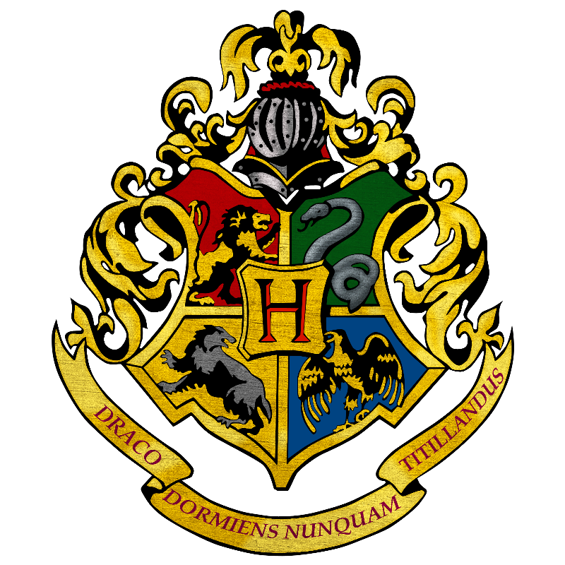
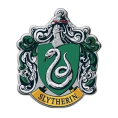
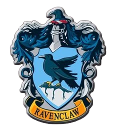
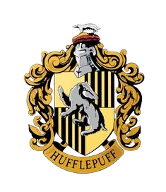

UNIDOS POR HOGWARTS
Conheça o mundo de Harry Potter!
Entre magia, aventuras e grandes desafios, Harry Potter apresenta um universo cheio de lugares, criaturas e histórias que conquistaram fãs ao redor do mundo.
APRENDA CRIANDO
UNIDOS POR HOGWARTS
Entre magia, aventuras e grandes desafios, Harry Potter apresenta um universo cheio de lugares, criaturas e histórias que conquistaram fãs ao redor do mundo.

Hogwarts é uma escola de magia e bruxaria onde jovens aprendem a controlar seus poderes e descobrem mais sobre o mundo mágico.
A escola é dividida em quatro casas, cada uma com suas próprias características e tradições.
Conhecida pela coragem, determinação e vontade de enfrentar desafios.

Representa a ambição, a inteligência e a determinação para alcançar seus objetivos.

Valoriza a inteligência, a criatividade e o conhecimento.

É conhecida pela lealdade, amizade, dedicação e trabalho em equipe.

O universo de Harry Potter vai muito além da escola. Existem diferentes lugares, criaturas, objetos mágicos e acontecimentos que fazem parte dessa história.
Ao longo da saga, os personagens conhecem novos lugares e enfrentam diferentes desafios enquanto descobrem cada vez mais sobre o mundo da magia.
A história acompanha Harry Potter durante seus anos em Hogwarts, mostrando sua amizade com Hermione Granger e Rony Weasley e os desafios que eles enfrentam juntos.
A saga mistura aventura, amizade, coragem e escolhas importantes, criando uma história que se tornou conhecida em todo o mundo.